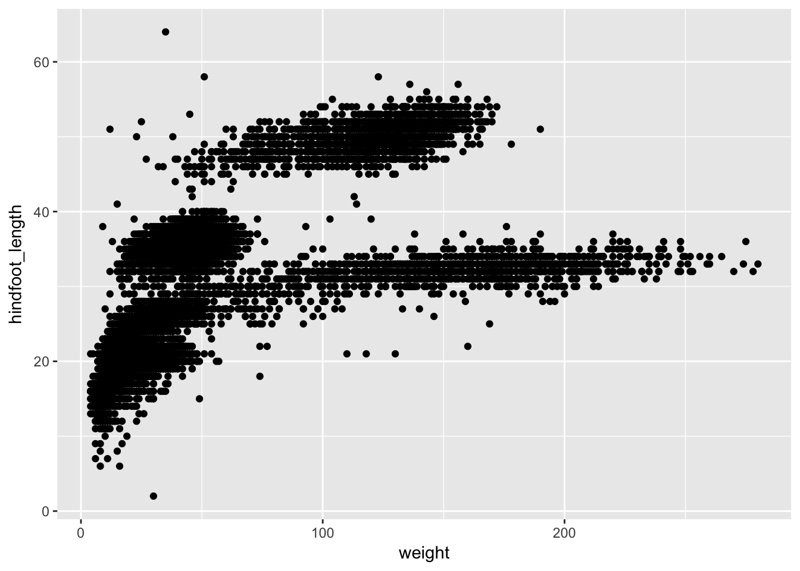
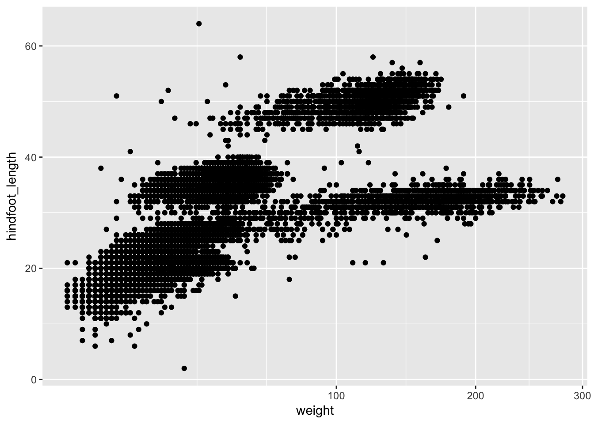
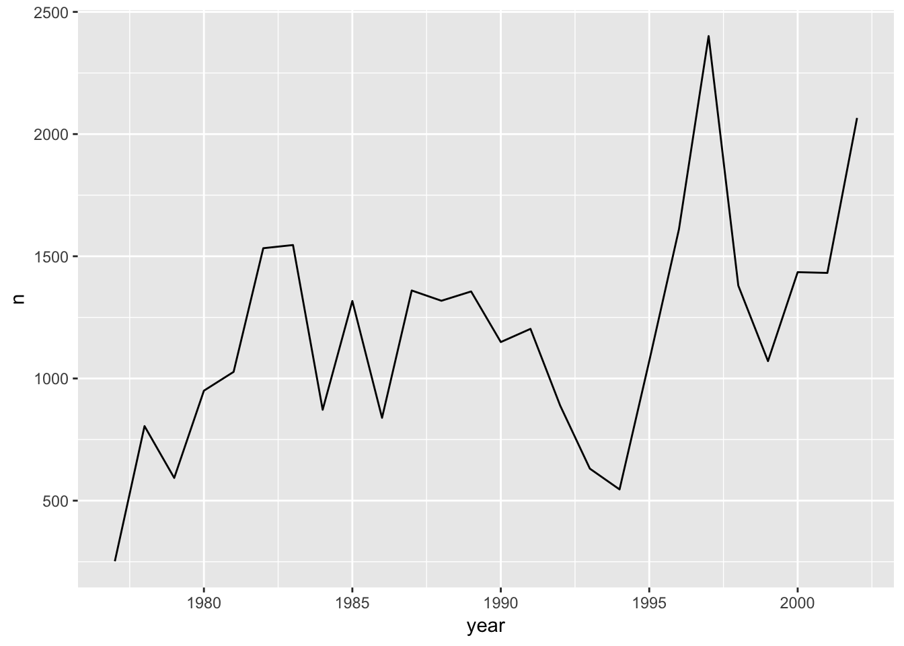
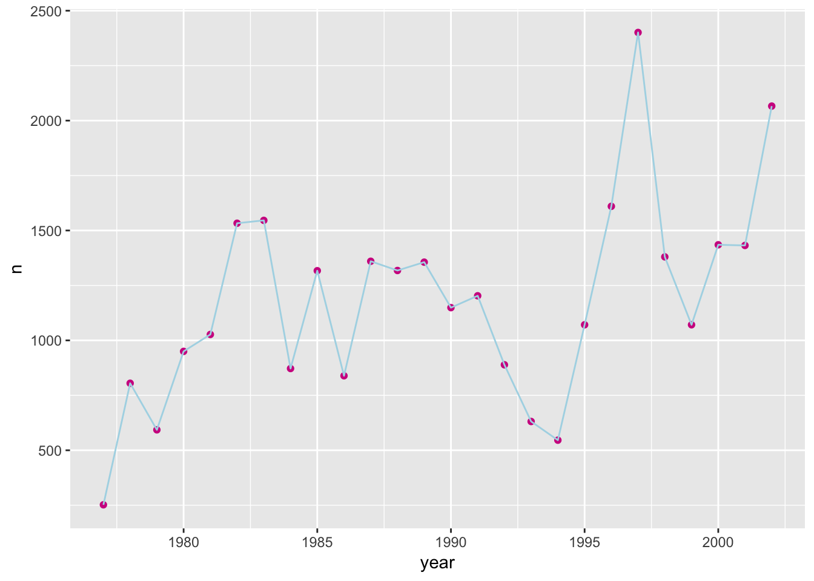
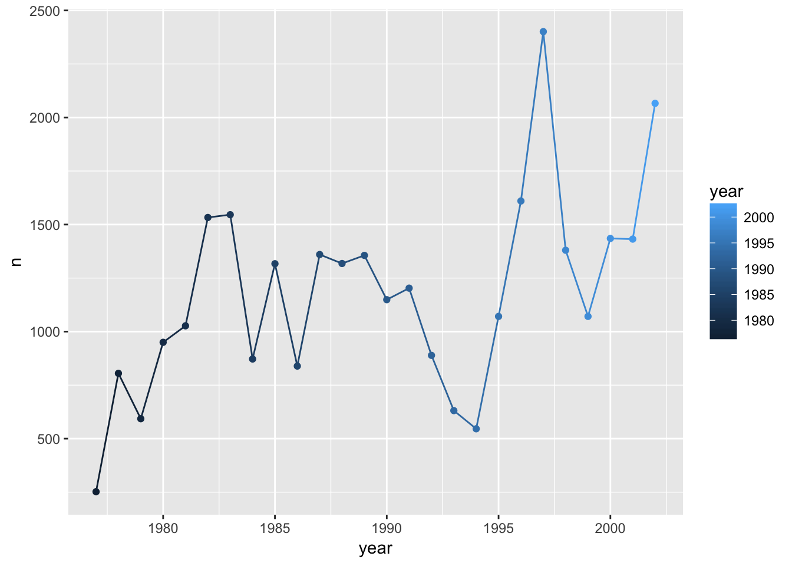
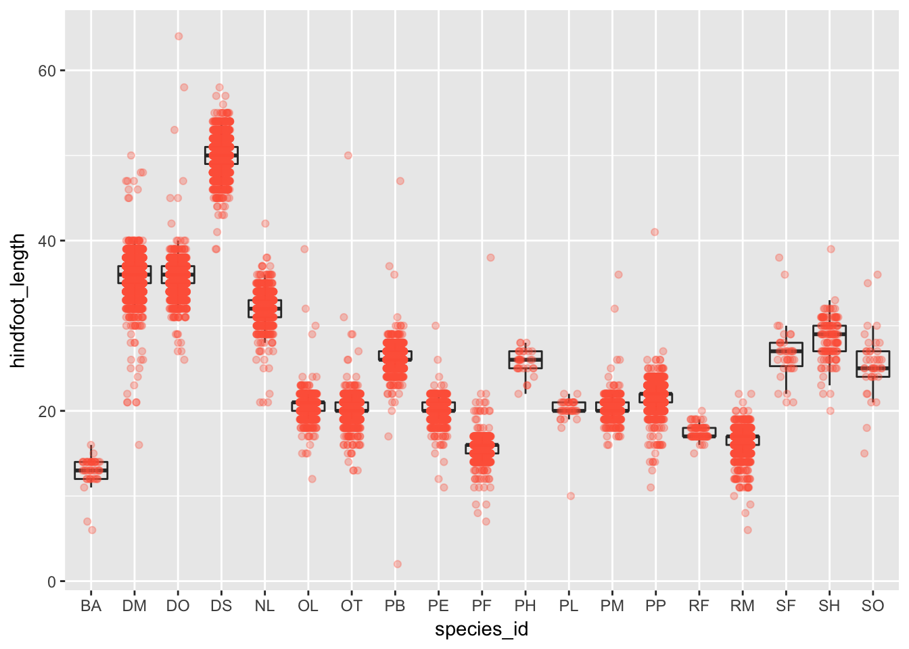
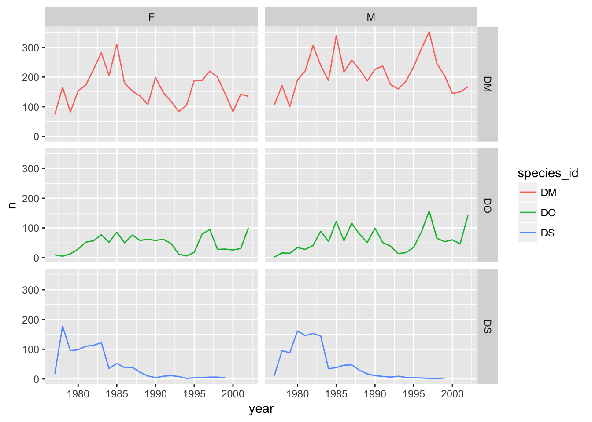
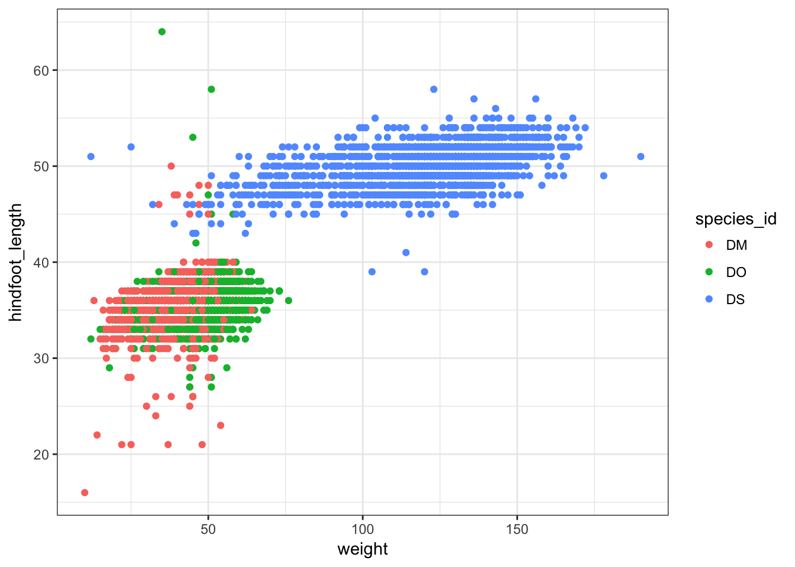

| layout: topic |
| title: Data visualization with ggplot2 |
| minutes: 60 |
Learning Objectives
- Visualize some of the mammals data from
portal_clean.csv- Understand how to plot these data using R ggplot2 package. For more details on using ggplot2 see the official documentation or the ggplot2 book.
- Building complex plots, step by step, with the ggplot2 package
Set up
First, load the “portal” data directly from the web:
surveys <- read.csv("http://kbroman.org/datacarp/portal_clean.csv")Or download the file and then load it:
download.file("http://kbroman.org/datacarp/portal_clean.csv",
"clean_data/portal_clean.csv")
surveys <- read.csv("clean_data/portal_clean.csv")Later, we’re going to use a few datasets that were created at the end of the dplyr lesson. For completeness, let’s create them here.
Make a data set called
just_dmthat is only the observations from the species with the id"DM"from the originalsurveysdata set.
library(dplyr)
just_dm <- surveys %>% filter(species_id=="DM")Make a data set called
stat_summarythat contains the average weight and hindfoot length of each species, as well as a count of the number of observations for each species (using then()function).
stat_summary <- surveys %>%
group_by(species_id) %>%
summarize(mean_wt=mean(weight),
mean_hfl=mean(hindfoot_length),
n=n())Make a data set called
year_summarythat contains the yearly average weight, hindfoot length, and count data for each species and sex combination.
year_summary <- surveys %>%
group_by(species_id, year, sex) %>%
summarize(mean_wt=mean(weight),
mean_hfl=mean(hindfoot_length),
n=n())Plotting with ggplot2
There are two main systems for making plots in R: “base graphics” (which are the traditional plotting functions distributed with R) and ggplot2, written by Hadley Wickham following Leland Wilkinson’s book Grammar of Graphics. We’re going to show you how to use ggplot2. It may seem a bit complicated at first, but once you get a hang of it, you’ll be able to make really useful visualizations quite rapidly.
We first need to load the ggplot2 package.
library(ggplot2)Let’s first make a scatterplot of hindfoot length vs weight. Here’s the code to do it.
ggplot(surveys, aes(x = weight, y = hindfoot_length)) + geom_point()
Two key concepts in the grammar of graphics: aesthetics map features of the data (for example, the weight variable) to features of the visualization (for example the x-axis coordinate), and geoms concern what actually gets plotted (here, each row in the data becomes a point in the plot).
Another key aspect of ggplot2: the ggplot() function creates a graphics object; additional controls are added with the + operator. The actual plot is made when the object is printed.
p1 <- ggplot(surveys, aes(x=weight, y=hindfoot_length))
p2 <- p1 + geom_point()
print(p2)If we saved the pieces like this, we could apply other options afterwards. For example, if we wanted weight on a log scale:
p2 + scale_x_log10()
This makes it kind of easy to try out different things. For example, we could plot the x-axis on a square root scale.
p2 + scale_x_sqrt()
Challenge
Make a scatterplot of hindfoot_length vs weight, but only for the species_id "DM".
- Use the dataset we’d created,
just_dm - Use our ggplot2 code above but with this new dataset in place of
surveys.
Other aesthetics
For scatterplot, additional aesthetics include shape, size, color, and “alpha” (for transparency of points).
- adding transparency (alpha) to the points
ggplot(surveys, aes(x = weight, y = hindfoot_length)) +
geom_point(alpha = 0.1)
- changing the color of the points
ggplot(surveys, aes(x = weight, y = hindfoot_length)) +
geom_point(alpha = 0.1, color = "slateblue")
- changing the size of the points
ggplot(surveys, aes(x = weight, y = hindfoot_length)) +
geom_point(alpha = 0.1, color = "slateblue", size=0.5)
Things get more interesting when we assign these aesthetics to data. We need to wrap it in aes().
ggplot(surveys, aes(x = weight, y = hindfoot_length)) +
geom_point(aes(color = species_id))
Challenge
Make a scatterplot of mean hindfoot_length vs mean weight, where each point is a species, and where the sizes of points indicate the sample size.
Use the dataset we’d created,
stat_summaryUse our ggplot code with the aesthetics
x=mean_wtandy=mean_hfl, plussize=n.
Layers
You can use geom_line to make a line plot. For example, we could plot the counts of species by year.
count_by_year <- surveys %>%
group_by(year) %>%
tally
ggplot(count_by_year, aes(x=year, y=n)) +
geom_line()
You can use both geom_line and geom_point to make a line plot with points at the data values.
ggplot(count_by_year, aes(x=year, y=n)) +
geom_line() +
geom_point()
This brings up another important concept with ggplot2: layers. A given plot can have multiple layers of geometric objects, plotted one on top of the other.
If you make the lines and points different colors, we can see that the points are placed on top of the lines.
ggplot(count_by_year, aes(x=year, y=n)) +
geom_line(color="lightblue") +
geom_point(color="violetred")
If we switch the order of geom_point and geom_line, we’ll reverse the layers.
ggplot(count_by_year, aes(x=year, y=n)) +
geom_point(color="violetred") +
geom_line(color="lightblue")
Note that aesthetics included in the call to ggplot() (or completely separately) are made to be the defaults for all layers, but we can separately control the aesthetics for each layer. For example, we could color the points by year:
ggplot(count_by_year, aes(x=year, y=n)) +
geom_line() +
geom_point(aes(color=year))
Compare that to the following:
ggplot(count_by_year, aes(x=year, y=n)) +
geom_line() +
geom_point() +
aes(color=year)
Challenge
Use the
year_summarydataset to make a line plot of counts of each species by year, with a different line for each species.Use
aes(linetype=sex)to have different line types for the two sexes.
Univariate geoms
We’ve focused so far on scatterplots, but one can also create one-dimensional summaries, such as histograms or boxplots.
Boxplot
Visualising the distribution of weight within each species.
ggplot(surveys, aes(x = species_id, y = hindfoot_length)) +
geom_boxplot()
By adding points to boxplot, we can have a better idea of the number of measurements and of their distribution:
ggplot(surveys, aes(x = species_id, y = hindfoot_length)) +
geom_boxplot(alpha = 0) +
geom_jitter(alpha = 0.3, color = "tomato", width=0.2, height=0)
Notice how the boxplot layer is behind the jitter layer? What do you need to change in the code to put the boxplot in front of the points such that it’s not hidden.
Challenge
A variant on the box plot is the violin plot. Use geom_violin() to make violin plots of hindfoot_length by species_id.
Challenge
Try using geom_histogram() to make a histogram visualization of the distribution of weight.
Hint: You want weight as the x-axis aesthetic. Try specifying bins in geom_histogram().
Faceting
ggplot has a special technique called faceting that allows to split one plot into multiple papels based on a factor included in the dataset. We will use it to make one plot for a time series for each species. Here I’m using color for the two sexes.
ggplot(year_summary, aes(x = year, y = n, group = species_id)) +
geom_line(aes(color=sex)) +
facet_wrap(~ species_id)
Challenge
Use the year_summary dataset and make scatterplots of mean hindfoot length vs mean weight (with each point being a species), faceting by year.
Use aesthetics
x=mean_wtandy=mean_hflUse
geom_point(aes(color=species_id, shape=sex))Use
facet_wrap(~ year)
facet_grid
The facet_wrap geometry extracts plots into an arbitrary number of dimensions to allow them to cleanly fit on one page. On the other hand, the facet_grid geometry allows you to explicitly specify how you want your plots to be arranged via formula notation (rows ~ columns; a . can be used as a placeholder that indicates only one row or column).
I’m first going to create a reduced data set of counts of the species "DM", "DO", and "DS", by sex and by year.
d_counts <- surveys %>%
filter(species_id %in% c("DM", "DO", "DS")) %>%
group_by(species_id, year, sex) %>%
tally()Plot count vs year, with curves for the different species and separate panels for males and females, split horizontally.
## One row, facet by columns
ggplot(d_counts, aes(x=year, y=n, color = species_id)) +
geom_line() +
facet_grid(~ sex)
And split vertically.
## One column, facet by rows
ggplot(d_counts, aes(x=year, y=n, color = species_id)) +
geom_line() +
facet_grid(sex ~ .)
And a separate panel for each sex and each species.
## species in rows; sexes in columns
ggplot(d_counts, aes(x=year, y=n, color = species_id)) +
geom_line() +
facet_grid(species_id ~ sex)
Saving plots to a file
If you want to save a plot, to share with others, use the ggsave function.
The default is to save the last plot that you created, but I think it’s safer to first save the plot as an object and pass that to ggsave. Also give the height and width in inches.
p <- ggplot(surveys, aes(x=weight, y=hindfoot_length)) + geom_point()
ggsave("scatter.png", p, height=6, width=8)The image file type is taken from the file name extension. To make a PDF instead:
ggsave("scatter.pdf", p, height=6, width=8)Use scale to adjust the sizes of things, for example for a talk/poster versus a paper/report. Use scale < 1 to make the various elements bigger relative to the plotting area.
ggsave("scatter_2.png", p, height=6, width=8, scale=0.8)Themes
Not everyone gray background and such in the default ggplot plots.
But you can apply one of a variety of “themes” to control the overall appearance of plots.
One that a lot of people like is theme_bw(). Add it to a plot, and the overall appearance changes.
surveys %>% filter(species_id %in% c("DM", "DS", "DO")) %>%
ggplot(aes(x=weight, y=hindfoot_length)) +
geom_point(aes(color=species_id)) +
theme_bw()
Customizing plots
Axis limits
When faceting, the different panels are given common x- and y-axis limits. If we were to create separate plots (say one for each country), we would need to do a bit extra to ensure that common axis limits are used.
Recall the scale_x_log10() function that we had used to create the log scale for the x axis. This can take an argument limits (a vector of length 2) defining the minimum and maximum values plotted.
There is also a scale_y_log10() function, but if you want to change the y-axis limits without going to a log scale, you would use scale_y_continuous(). (Similarly, there’s a scale_x_continuous.)
For example, to plot the data for China, using axis limits defined by the full data, we’d do the following:
xrange <- range(surveys$weight)
yrange <- range(surveys$hindfoot_length)
surveys %>% filter(species_id=="DM") %>%
ggplot(aes(x=weight, y=hindfoot_length)) +
geom_point() +
scale_x_log10(limits=xrange) +
scale_y_continuous(limits=yrange)Color choices
If you don’t like the choices for point colors, you can customize them in a number of ways. First, you can use scale_color_manual() with a vector of your preferred choices. (If it’s fill rather than color that you want to change, you’ll need to use scale_fill_manual().)
colors <- c("blue", "green", "orange")
surveys %>% filter(species_id %in% c("DM", "DS", "DO")) %>%
ggplot(aes(x=weight, y=hindfoot_length)) +
geom_point(aes(color=species_id)) +
scale_color_manual(values=colors)You can also use RGB hex values.
hexcolors <- c("#001F3F", "#0074D9", "#01FF70")
surveys %>% filter(species_id %in% c("DM", "DS", "DO")) %>%
ggplot(aes(x=weight, y=hindfoot_length)) +
geom_point(aes(color=species_id)) +
scale_color_manual(values=hexcolors)